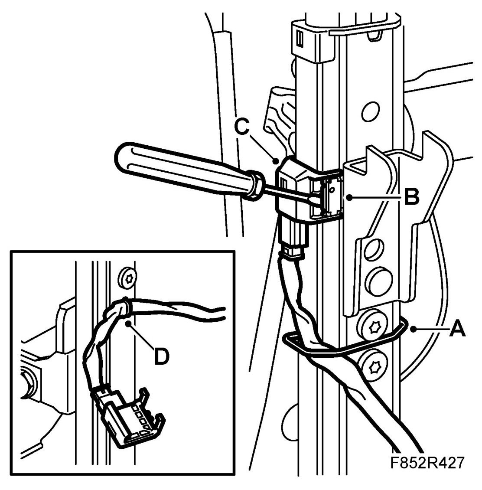
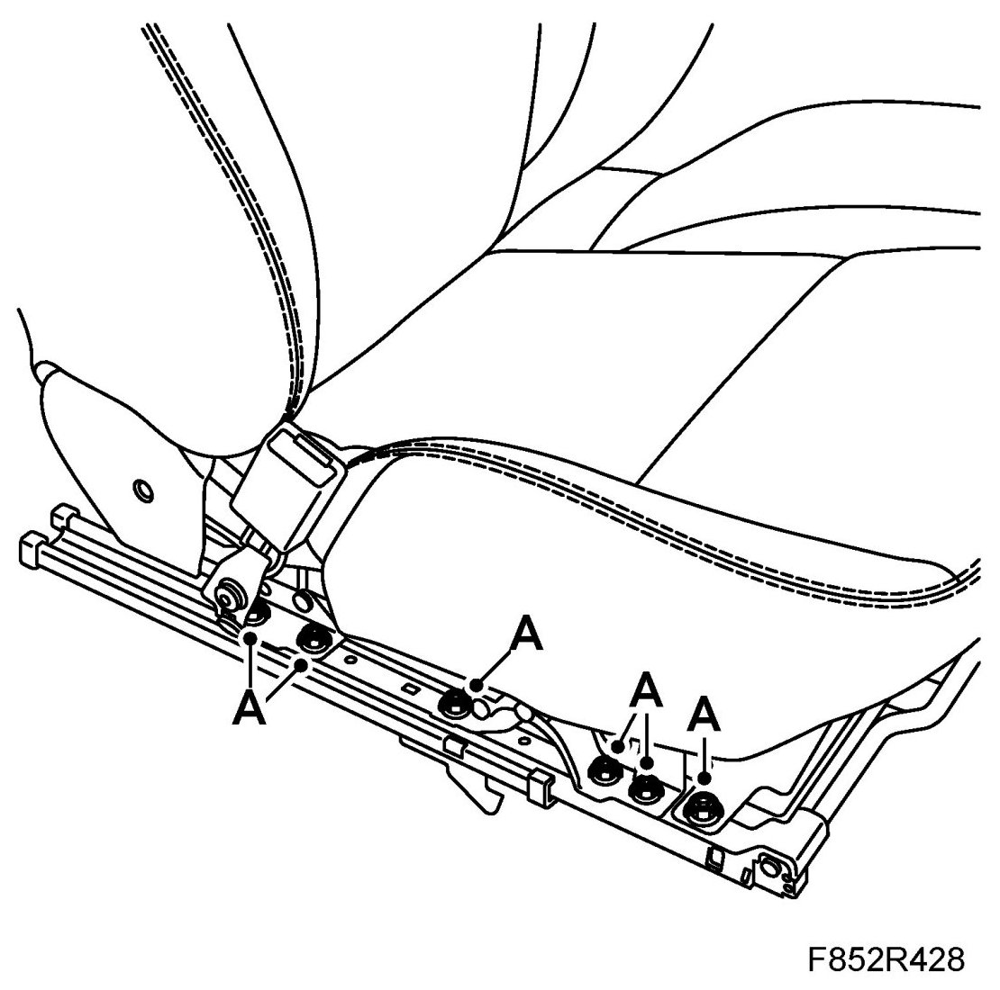
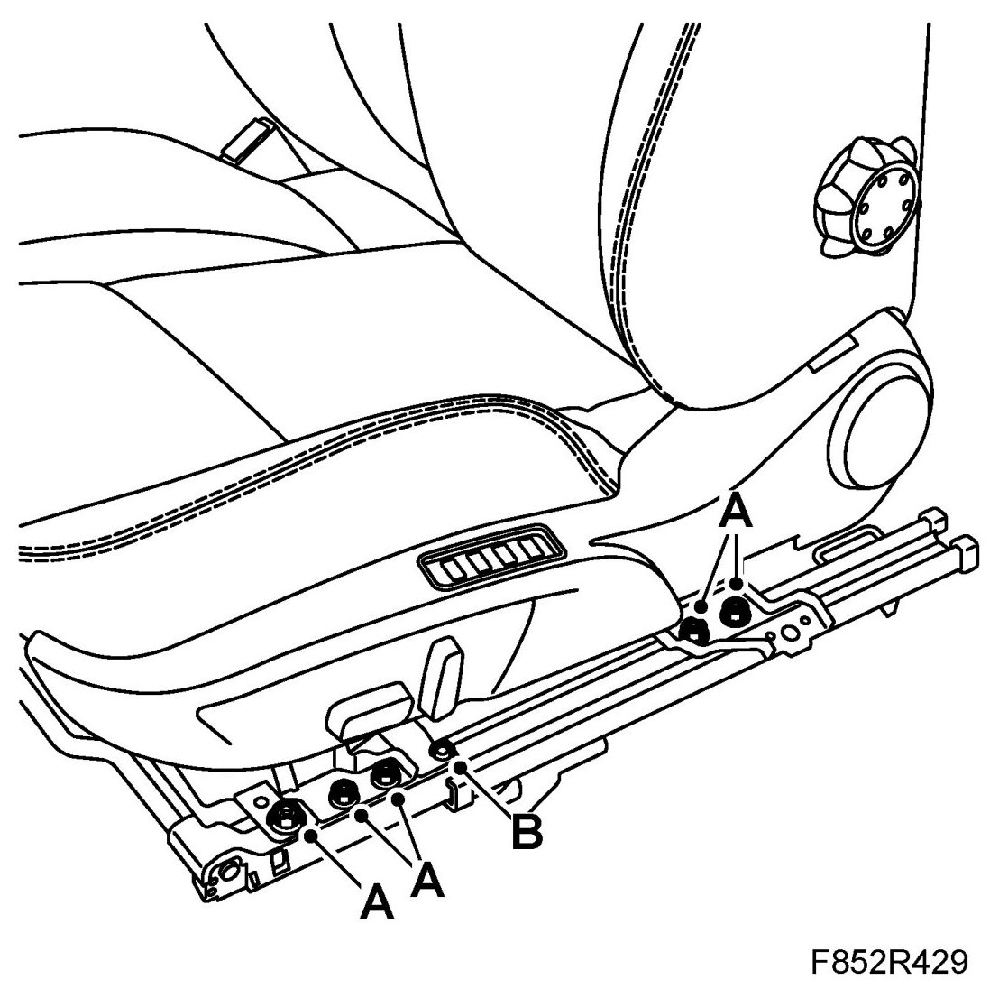
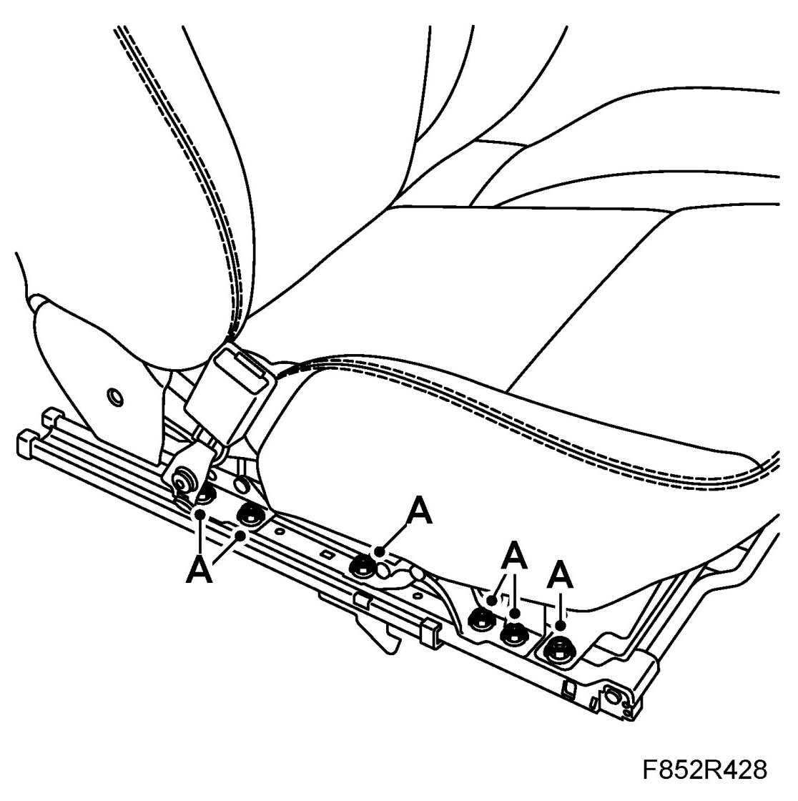
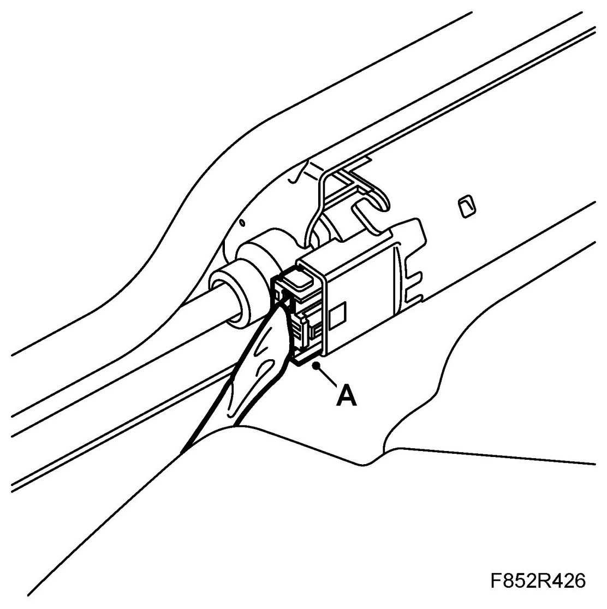

Seat Rail
Seat Rail
To remove
1. Remove the Front seat.
NOTE: Place the seat outside the car with the backrest to the floor to facilitate the work.
2. Unplug the connector (A) for the front motor.
3. Remove the position sensor.
- Remove the clip (A) that holds the wiring harness. Remove the connector's retaining clip (B) and remove the position sensor (C) from the seat rail.

- Remove the wiring harness by undoing the clip (D) from the seat rail.
4. Remove the nuts (A) from the outer seat rail.

5. Remove the nuts (A) and the screw (B) from the inner seat rail.

6. Lift up the front plastic bracket.
7. Lower the seat rail.
To fit
1. Fit the seat rail to the seat, make sure that the plastic bracket is at the top in the front anchorage points.
2. Fit the nuts (A) and the screw (B) to the inner seat rail.
3. Fit the nuts (A) to the outer seat rail.

4. Fit the position sensor to the seat rail.
- Fit the position sensor (C) to the seat rail. Fit the connector's retaining clip (B).
- Fit the clip (A) that holds the wiring harness. Fit the wiring harness' clip (D) to the seat rail.
5. Plug in the connector (A) for the front motor.

6. Fit the Front seat.